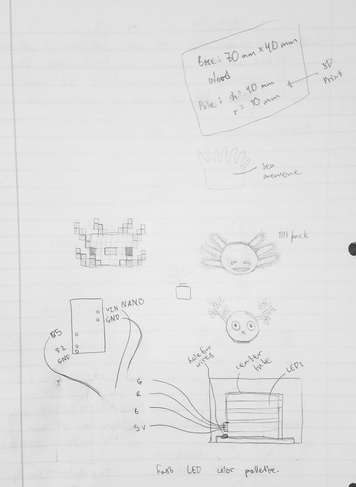
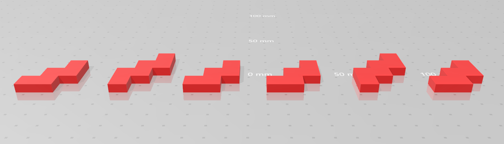
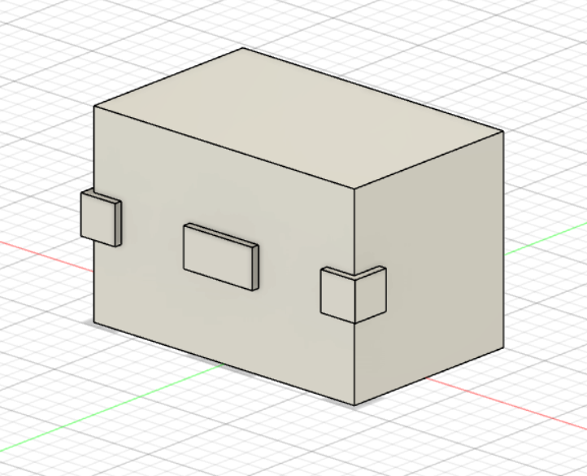
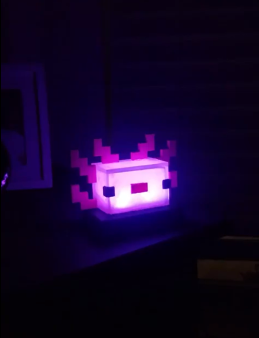
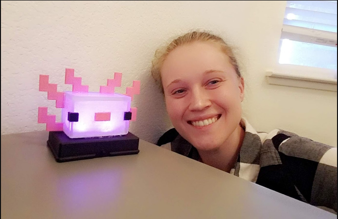

Initial concepts
I initially sketched out different designs for the lamp. I decided on making it look like the new axolotl mob in Minecraft.

CAD designs
I modeled the main head and the gills in Fusion 360 and then had them 3D printed. They were simple designs, so fabricating them by hand wouldn't have been too much of a problem, but since the design was pixel-based, going the 3D printing route would made it super easy to get exact square proportions.
The gills were made using just a standard 3D printer, but the head was made using a 3D resin printer so it would be transparent.

Arduino Project
I used a sample RGB LED arduino code from SparkFun, but then edited it to have the light only cycle through purple, pink, and red colors.
I also got the code to oscillate forwards and backwards through the RGB values so that the color change would never be abrupt.
For anyone doing a similar project, I recommend getting a real Arduino Nano, vs. a cheap knock-off because the initial, cheap nano I tried to use wasn't able to integrate with my computer correctly.
See the Arduino Code See the Tinkercad DesignFinal Product
Here's how my final project turned out! I painted the lamp using acrylic paint, and then secured things down using hot glue.
I was planning to machine cut the base, but I had to finish my project at home, so I instead repurposed a plastic box that I found.
See the Video
Also here's me taking a mom selfie next to it.
